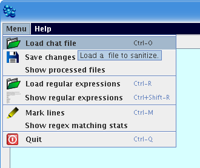
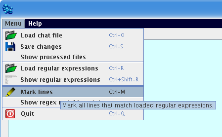
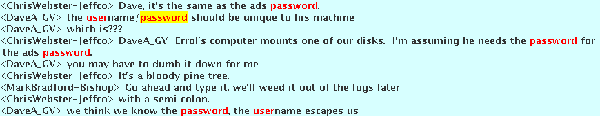
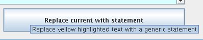
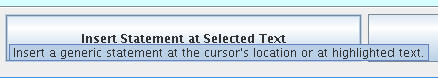

To load the new file choose the "Load regular expressions" menu item from the main menu and find the regex file you created.

The ChatScrubber is used to remove unwanted statements from a chat log. This program is not autonomous and still requires the user to choose which text to sanitize. The process is sped up considerably as words of interest are highlighted and can be sanitized quickly.
Running the ProgramTo begin the user loads a chat file by going to the menu and selecting the "Load chat file" option. The user can also use the Ctrl-O keyboard shortcut to open a new file.
Once the file has been loaded the user should choose the "Mark lines" menu item (also Ctrl-M).
The program traverses the text and checks for any areas that match the loaded regular expressions. Matching text is marked in red and the current flagged line is highlighted in yellow.
After viewing the highlighted text the user can choose to either replace the text with a generic sanitized statement using the "Replace current with statement" button, or move to the next flagged line with the "next" button. Pressing the "back" button will highlight the previous flagged line. The user can press 'alt+down arrow' to go to the next line or 'alt+up arrow' to go back.
The user can also select text with the mouse and replace this text with a generic statement using the "Insert statement at selected text" button. If you click in the text area the cursor does not appear. Clicking the "Insert statement at selected text" button without any selected text will insert a statement at the last clicked location.
To load the new file choose the "Load regular expressions" menu item from the main menu and find the regex file you created.